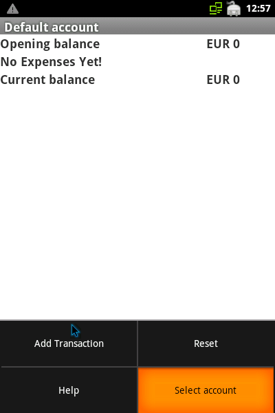

Managing accounts
Gestion des comptes
Verwaltung der Konten
The first thing you will probably want to do, is edit the default account, or create a new one:

As in other Android appplications, a long click on the account brings up the context menu, from where
you can edit or delete the account.
Enter a label, a description, the opening balance, and a currency for the account.
When done, you see the list of accounts. You can set up as many accounts as you like through the menu entry "Create new account".
Selecting the current account is done through a short click on it in the list.